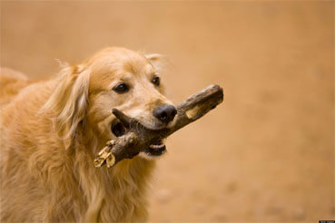

NUTRITION
The health of our pets is very important to us . Of course, primarily a healthy diet of our cold noses is important . Health , vitality and a long dog's life depends not least on the right diet . What does it take and what food can make a dog sick , know our vet Alexandra Fluck:
The dog is an omnivore - similar to us humans . This property has been our faithful companion , the wolves inherited from his ancestors . The wild " self " not only eat the meat of hunted prey , but also their innards including the contents of the stomach and intestines . They also take herbal nutrients as roots and grasses . The wolf as the dog therefore:
Optimal performance requires optimal nutrition.
Good food is the foundation for health, performance and longevity.
Improper diet can make the dog sick.
Important for a dog is a sufficient supply of energy in all phases of life. This is based on his life. If the dog is athletic, active, it is held outdoors or at home? Questions that should be answered before any holder. An active dog, for example, needs more, a quiet dog less food. As a rough guide applies this rule of thumb: An adult dog without special loads required daily per kilogram of his body mass about 57 kcal feed. For small breeds, the values are slightly higher. Puppies need about 100 to 170 kcal. breeding females in the second half of the Saugelesitung even 100 to 300 kcal . An older dog needs less often , a very old dog then a little more energy in the diet .
When finished feed the correct calculation for the nutrition of the dog's own is relatively simple: depends on the specifications of the manufacturer and expects about 10 percent less food than indicated. For self- produced rations a careful calculation of all nutrients with the help of tables is the only way in appropriate books . And do not forget the treats that your dog gets in between . Also in dogs biscuits stuck calories !
Protein, fat , carbohydrates , vitamins and trace elements are the main nutrients that should be contained in a good dog food . They provide energy that your dog needs for the preservation of all vital functions .
Protein has the purpose to build body tissue and strengthen . The amino acids found in protein are essential for the dog. Of them there are 25 of which 12 are essential for the dog , that is, he can not build it yourself . Meat is a very high quality protein source . Their protein content is at least 18 percent of the fresh water and about half of them in the dry matter . Also fish is a good alternative for the dog. In addition , the food from the sea a high proportion of unsaturated fatty acids and vitamin D , which are , however, available only in fresh fish . In fish meal Vitamin D and oils were removed .
Fats are composed of glycerol and fatty acids and provide vital acids , vitamins ( A, D , K and E ) and give the dog energy . Linoleic acid is essential for the dog. Special importance is attached to some unsaturated fatty acids because they have influence on inflammatory responses and immune defense . A dog needs vegetable and animal fats , both of which should be supplied through the diet . Warning : The fat content in the diet , however, should be significantly behind that of other energy sources such as protein or carbohydrates . Otherwise it leads to obesity in dogs .
Carbohydrates come primarily from plants and are made up of sugar molecules . They are needed for energy production and for cell structure and regulate intestinal motility . Thus, although they are a useful , but not absolutely vital part of the canine diet. Carbohydrates are the main supplier of grain and potatoes . Domesticated dogs are often served baked goods . Since the dog does not need a lot of carbohydrates , but any commercial dry food contains at least one carbohydrate source , a deficiency has rather rare here .
Note : barley , spelled , rye , millet , oats can not break down even the dog , so these grains should be soaked overnight and boiled briefly the next day . The best tolerates the dog cereals crushed flake like oatmeal or millet flakes . Grain in dog food should always be fully satisfying , not peeled .
Vitamins and trace elements can not be self- formed and are also vital from the dog. In this case, it is not enough to feed from each of the nutrients in each case only a calculated minimum of the dog. Because between the dietary nutrients , there are numerous interactions . Often a lack of nutrients administered cause other nutrients can not be sufficiently utilized by the body . Conversely, it can lead to serious health problems in dogs , when certain nutrients are fed in too large quantities . And finally, in many diseases specific nutrition programs include ( diet) for therapy . From these correlations indicate that a unilateral meat diet is not enough for the dog , but even harmful.
Whether from insecurity , lack of time or convenience - if dog is hungry , grab some 84 percent of all dog owners in the finished feed shelf , so a study of the consulting firm BBE . In addition, in single and small households fall off less often leftovers that were thought in the past for the dog , as it is cooked in households today even rarer . Not to worry : In dry and so -called wet food all the necessary nutrients for the diet of the dog are included . Typical wet food contains about 80 percent water , forage below 10 percent . However, this means that with a seemingly small amount of dry food can be quickly fed too much ! Because dry food is concentrated five times higher due to the low water content , the dog receives namely much faster to high levels of nutrients and especially energy . A danger in canned food is the possibly high protein content . Be careful !
By the way : In finished feed vitamins are in very high amounts. Whether vitamins contained naturally or are artificially synthesized , you can see from the declaration : If they are listed under " composition " , they have been artificially added vitamins naturally present can only be found in the analysis .
When feeding " off the table " there is the danger of a non -balanced diet , unless it is supplemented by mineral feed . For administration of finished feed you should give your dog under any circumstances additional minerals such as calcium , phosphorus , magnesium , potassium , sodium or chloride . Especially dangerous for the dog is an oversupply of calcium during growth . Calcium is mainly found in milk and dairy products , but also in bone and eggshell . In high meat content in a home-cooked diet , however an excess supply of phosphorus is produced. This must be carefully calculated , which supplements for your dog's diet are correct. Shares of phosphorus are found in dairy products , in meat , fish and cereals
Dehydration is lethal in contrast to food deprivation in dogs within a few days . The required daily fluid intake thus differs significantly when feeding wet or dry food. Is a gift of wet food (canned or your own kitchen ) the daily water ration at about 5 to 10 ml per kilogram of body mass , you should make sure that significantly more ( 40-50 ml ) is drunk at a feeding with dry food.
A properly nourished dog appear vital, he has a smooth, shiny coat , normal defecation and urination . The dog should have strong teeth , healthy gums and breath odor . The eyes should be clear and bright, the nose clean smooth and moist . The vitality of the dog gives information about the quality and balance his diet.
Overweight or underweight can be judged by scanning . If the ribs are easy to feel , without that they are visible under the skin , so the normal weight should be reached . For control of downward deviations ( very rare, ) ( more commonly known ) or up regular weighing is important . As a comparison, so -called standard weights of the breeds are not very suitable . It compares better with a normal weight , same size and similar build dog. Better yet , if the original normal weight of the past is known.
A dog should be fed once or twice a day and then have a rest period of several hours . Also different amounts of energy and nutrients are needed for the different age groups and services . The situation is similar with the protein values and other ingredients .
The " eternal beggar " at the table you should not give better ! It is a huge mistake to believe that a dog begging , because it torments of hunger . This has genetic causes: The alpha wolf in the pack gets the loot . He gives the other wolves from it and stands out in this way . This is exactly what the begging dog . And since there is rarely a pack is present, it eats up itself on everything .
Serious is the thing , if your own dog will not eat . Often a disease behind it , and a thorough veterinary examination is necessary . If found doing nothing and the dog nitpicks further around in front of his bowl , it can be considered as a dog owner to change the taste of the food. Some dogs love honey , others warmed , stirred under the lining lard . Salmon oil and cod liver oil are also popular flavor enhancer , if the dog refuses his food , after about grief . Although targeted starving for days does not help , engages as rescue liverwurst . Some of it simply mingle with the food.
An optimal diet is one of the most important prerequisites for a dog to live a long time and it remains healthy. In contrast, many diseases are influenced by poor nutrition , such as obesity, diabetes mellitus , cardiovascular disease , skeletal and joint disorders , kidney disease and even cancer . It does not depend on the unique feeding of the much-vaunted " miracle substances " , but on the regular optimal nutrition of the dog.
Any disturbance in the diet can trigger the disease . The example of the disease cancer , are formed in the dog's body constantly degenerated cells , the body needs the corresponding substances from the diet , so his immune system can destroy these cells . Pay attention to good food in the bowl , and " spoil " your dog better with chocolate or not eternal bite off the table . Dedicate yourself to him rather in a healthy way : Go for a walk with him or play ball . This creates nearby, doing good for your health and your dog anyway .
